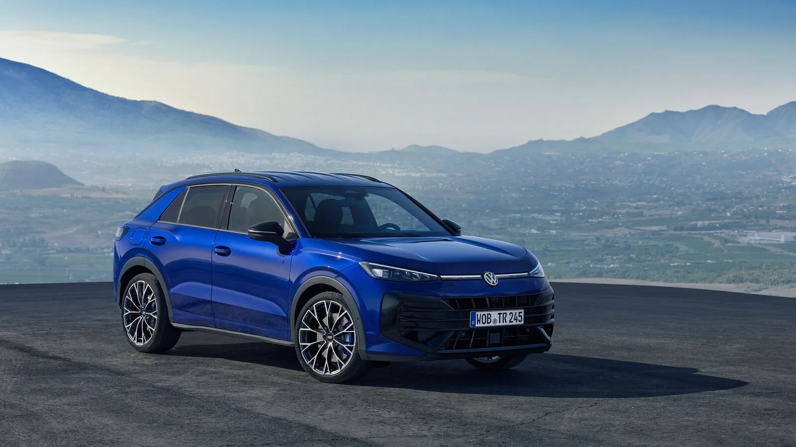
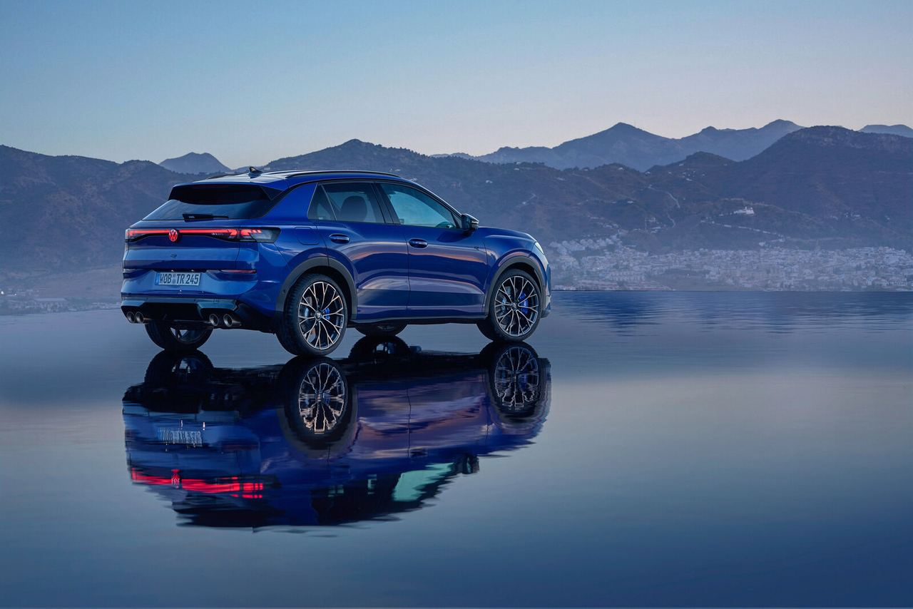
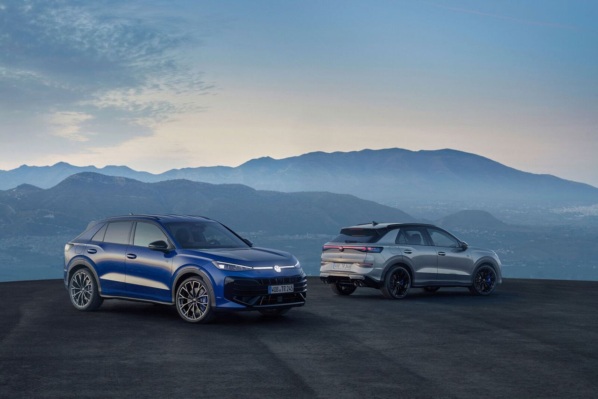

Volkswagen · 全球首發 · 德國2026-11-18
Volkswagen T-Roc R 全球首發：333 PS 輕油電性能休旅
Born on the racetrack: Volkswagen presents the T-Roc R with 333 PS
第二代 T-Roc 推出一年後，旗艦性能版 T-Roc R 全球首發。新開發的 EA888 evo5 2.0 渦輪首度在 R 車型加入 48V 輕油電，輸出 245 kW（333 PS）、0–100 km/h 5 秒，標配 4MOTION 與扭力分配後差；德國售價 59,995 歐元起，預計 2027 年初上市。
設計解析 Design Notes
- R 專屬外觀前保桿 R 設計元素、專屬擴散器與四出排氣，外掛件標配亮黑。
- 輪圈與煞車新 19 吋 Zandvoort 輪圈，可選 20 吋 Warmenau 鍛造圈；藍色卡鉗。
- 專屬色Lapiz Blue 金屬藍為 R 車型專屬，除 Grenadilla 黑外都可配黑色車頂。
- 座艙R 專屬花紋運動座椅、藍色 R 標與藍色對比縫線，數位儀表有 R 專屬畫面。